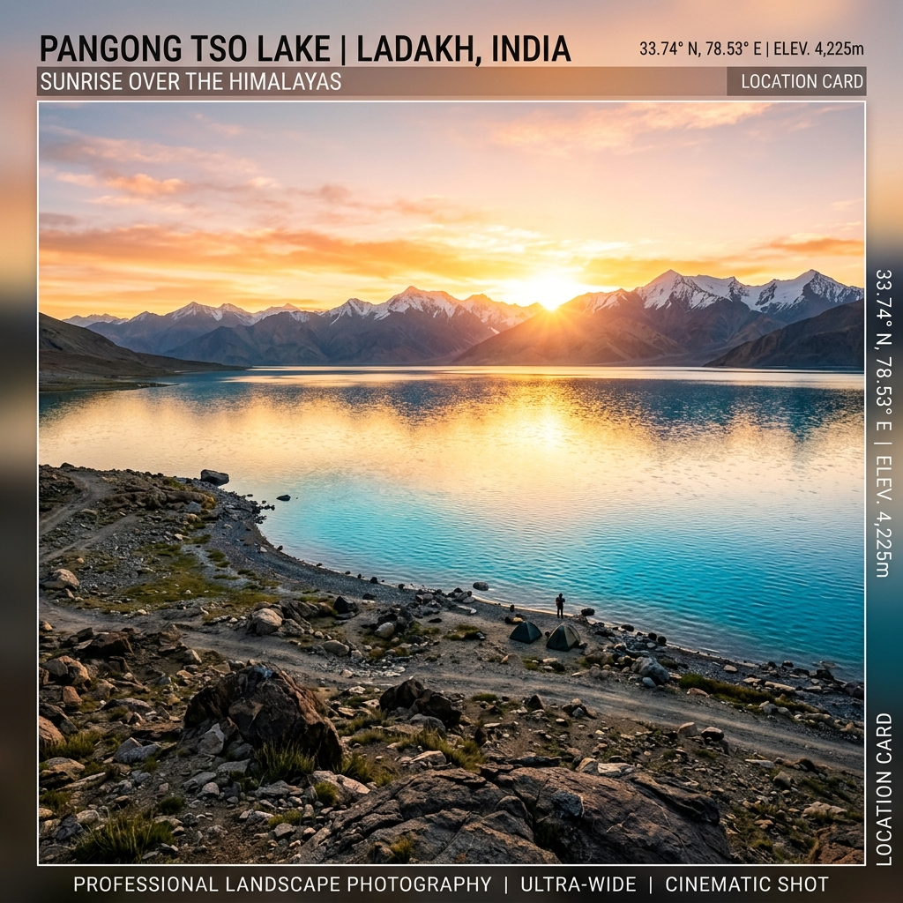
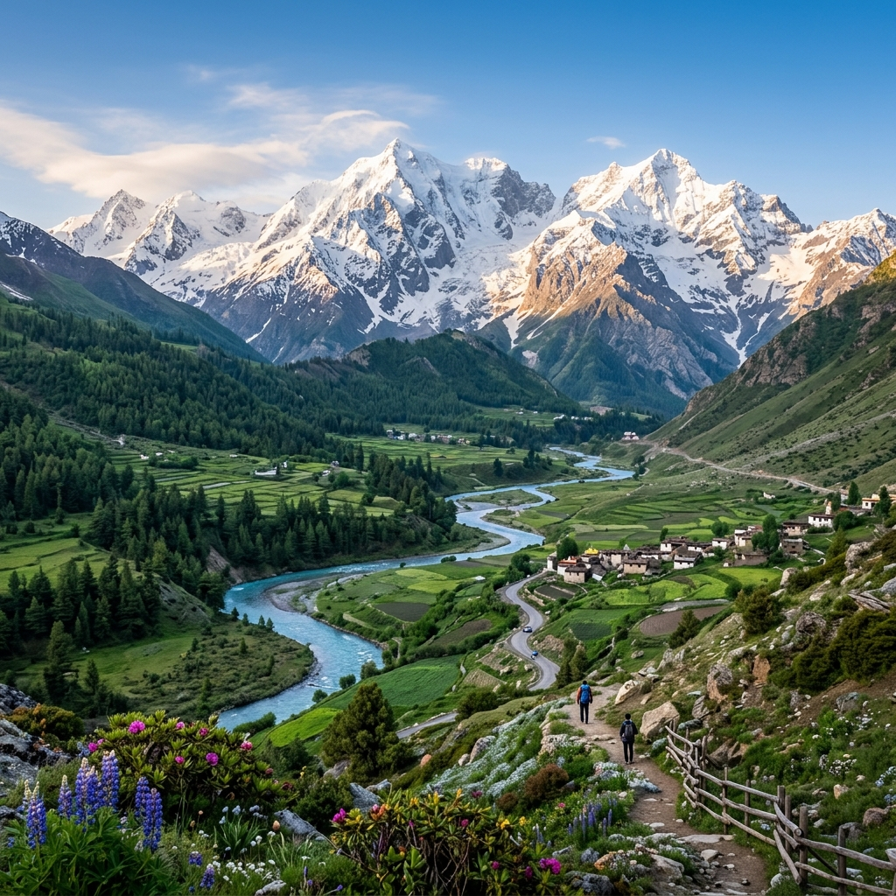
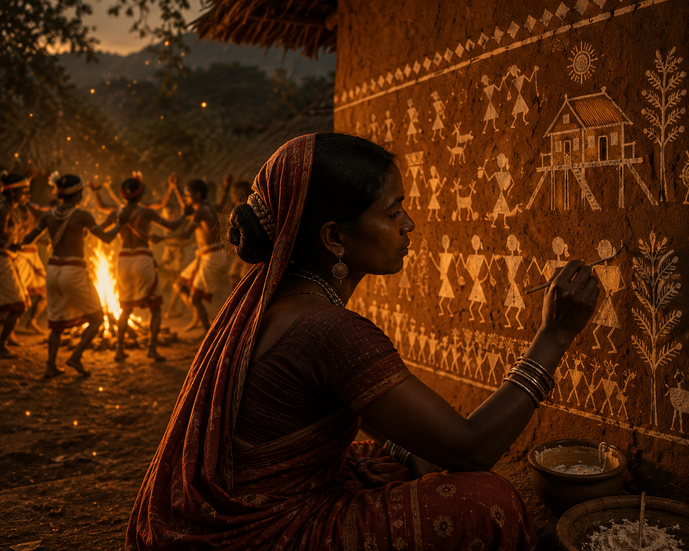

Battle of Rezang La Explorer
On a frozen ridge more than 16,000 feet above sea level, 120 soldiers of Charlie Company, 13th Kumaon Regiment, stood against thousands of advancing Chinese troops. Outnumbered, outgunned and frozen to the bone, they fought to the last round and the last man — buying the time that saved the Chushul airfield and the gateway to Leh. The last stand of Major Shaitan Singh at Rezang La remains one of the most extraordinary acts of valour in Indian military history.
A Ridge That Refused to Fall
In October 1962, during the Sino-Indian War, the People's Liberation Army launched a massive offensive across the disputed border in Ladakh and the North East Frontier Agency (NEFA, now Arunachal Pradesh). In the Chushul sector of Ladakh, the pass of Rezang La was a crucial defensive point — it guarded the vital Chushul airfield, the lifeline of India's defence in the region and the gateway to the capital of Ladakh, Leh.
The defence of the pass fell to Charlie Company of the 13th Battalion of the Kumaon Regiment — 120 soldiers under Major Shaitan Singh. Most were young Ahir (Yadav) men from the Mewat, Gurgaon and Rewari belts of Haryana, many seeing snow for the first time. They were armed with Second World War-era .303 bolt-action rifles, a few light machine guns, one small mortar and around 500 hand grenades — with no winter clothing, no mines, no artillery support and no hope of reinforcement as temperatures fell to about −25 °C.
🏔️ At a Glance
- 18 November 1962 — Fought at Rezang La, ~16,000–18,000 ft above sea level, in the Chushul sector of Ladakh.
- 120 against thousands — A single company faced massed Chinese battalions supported by artillery.
- Last Stand — The defenders repulsed wave after wave before running out of ammunition.
- 114 of 120 martyred — The pass was overrun only after the company fought to the last man.
- Param Vir Chakra — Major Shaitan Singh, India's highest wartime gallantry award, posthumously.
The Belligerents
A single under-equipped infantry company against the overwhelming power of a modern army — the most uneven contest of the 1962 war.
India — 13th Kumaon Regiment
- Unit — Charlie Company, 13th Battalion, Kumaon Regiment
- Commander — Major Shaitan Singh
- Strength — ~120 soldiers
- Weapons — .303 bolt-action rifles, light machine guns, one 2-inch mortar, ~500 hand grenades
- Soldiers — Mostly young Ahir men from Mewat, Gurgaon and Rewari in Haryana
China — People's Liberation Army
- Force — Massed PLA battalions, Chushul sector offensive
- Strength — ~3,000–5,000 troops
- Weapons — Modern self-loading rifles, heavy machine guns, 132 mm mortars, recoilless guns and rockets
- Tactics — Multi-directional assault waves under heavy artillery cover
Why it mattered: China held every advantage — numbers, firepower, artillery, and air support. Yet a single company exacted a terrible price, with Indian accounts estimating over a thousand Chinese casualties. The imbalance makes the stand at Rezang La one of the most lopsided engagements ever recorded in modern warfare.
The Commanders
Behind the numbers were men — a company commander and section leaders who chose to stand and fight to the last.
Major Shaitan Singh
Born in Banasar, Rajasthan, on 1 December 1924 and commissioned into the Kumaon Regiment, Major Shaitan Singh commanded Charlie Company at Rezang La. He deployed his three platoons across a two-kilometre frontage and, though wounded, moved from post to post motivating his men and directing fire. He fought on until he was killed. His body was found months later in the snow, still holding his rifle, still facing the enemy. He was posthumously awarded the Param Vir Chakra, India's highest wartime gallantry award.
Naik Ram Singh
A section commander in Charlie Company, Naik Ram Singh held his post against overwhelming odds through the day's repeated assaults. He fought to the last and was martyred on the ridge. He was posthumously awarded the Vir Chakra for conspicuous bravery in the face of the enemy.
Jemadar Hari Ram
A junior commissioned officer of Charlie Company, Jemadar Hari Ram inspired his section as the Chinese attacks rolled in waves against the ridge. He fell fighting with his men and was posthumously awarded the Vir Chakra for his gallantry and devotion to duty.
The Chinese Offensive
Against the ridge stood the massed battalions of the People's Liberation Army — thousands strong, equipped with modern weapons and heavy artillery, and ordered to take Rezang La and roll on to Chushul. Their numbers and firepower were overwhelming; the resistance they met was not.
Why Rezang La Matters
The pass was tactically overrun on 18 November 1962, but strategically the stand was decisive. The fierce, prolonged resistance at Rezang La blunted the momentum of the Chinese advance and held the Chushul airfield out of reach, protecting India's position in Ladakh and the road to Leh at the darkest moment of the war. Within days, on 21 November, China announced a unilateral ceasefire.
In the memory of the Indian Army, Rezang La is a byword for last-stand valour — the High Himalaya's answer to Thermopylae. It is remembered every year on the anniversary of the battle, and a memorial now stands at the pass honouring the 114 men of Charlie Company who gave their lives.
⚔️ The Toll of Rezang La
- 114 of 120 defenders martyred — Charlie Company fought to the last man.
- Over 1,000 Chinese casualties — Indian accounts of the price exacted from the attackers.
- Chushul airfield held — The pass fell only after the defenders were spent.
- 21 November 1962 — China announces a unilateral ceasefire.
Gallantry Awards
The courage of Charlie Company was recognised with some of the highest honours an Indian soldier can receive.
Major Shaitan Singh
Param Vir Chakra (posthumous) — India's highest wartime gallantry award, for his extraordinary leadership and sacrifice at Rezang La.
Naik Ram Singh
Vir Chakra (posthumous) — for conspicuous gallantry while holding his section's post against overwhelming odds.
Lance Naik Brij Lal
Vir Chakra (posthumous) — for valour and devotion to duty during the defence of Rezang La.
Lance Naik Ram Chander
Vir Chakra (posthumous) — for gallantry in the face of the enemy on the frozen ridge.
Jemadar Hari Ram
Vir Chakra (posthumous) — for exemplary courage and leadership in the closing hours of the battle.
The Company's Other Ranks
Mentioned-in-Despatches — several soldiers of Charlie Company were recognised for their bravery; all the fallen are honoured at the Rezang La war memorial.
Chronology of the Battle of Rezang La
From the opening of the 1962 offensive to the ceasefire and the recovery of the fallen.
China Launches Its Offensive
The People's Liberation Army attacks across the disputed border in Ladakh and NEFA, opening the Sino-Indian War on a vast front.
Pressure on Chushul
Chinese forces intensify operations in the Chushul sector. The vital Chushul airfield — the lifeline to Leh — comes under direct threat, and the pass of Rezang La becomes the last natural barrier in its path.
Charlie Company Deploys
Charlie Company, 13th Kumaon, is positioned on the exposed ridges of Rezang La. In freezing conditions the soldiers dig in with limited ammunition, no artillery support and no mines.
The Chinese Assault Begins
Under heavy artillery and mortar cover, thousands of Chinese troops launch a coordinated, multi-directional attack against the Indian positions.
Waves Repulsed
Wounded, Major Shaitan Singh moves between posts, inspiring his men. Two platoons pour steady rifle, machine-gun and mortar fire into the attackers and repulse the first waves, inflicting heavy casualties.
Fight to the Last Round
Ammunition runs low and the Chinese press home from the rear. The fighting turns to desperate close-quarters and hand-to-hand combat as the company fights on with bayonets and grenades.
The Pass Is Overrun
Rezang La falls. Of the 120 defenders, 114 are martyred; a handful of survivors escape or are captured. The ridge has held for most of the day — and Chushul still stands.
China Declares a Ceasefire
The Chinese leadership announces a unilateral ceasefire along the entire front, bringing the 1962 war to an end with India's Ladakh defence still holding.
The Fallen Are Recovered
As the snow melts, the bodies of Charlie Company's soldiers are recovered — many found still holding their weapons and facing the enemy. Major Shaitan Singh is posthumously awarded the Param Vir Chakra, and a memorial is raised at Rezang La.
The Battlefield Remembered
A glimpse of the frozen lake country, the high passes and the lonely ridge where Charlie Company made its stand.



📚 References & Further Reading
- Press Information Bureau, Government of India. Rezang La war memorial and gallantry award citations.
- Indian Army / Ministry of Defence. Official citation for Major Shaitan Singh, Param Vir Chakra (posthumous).
- Bisht, Rachna (2014). The Brave: Param Vir Chakra Stories. Penguin Books.
- Guruswamy, Mohan (20 Nov 2012). "Don't forget the heroes of Rezang La". The Hindu.
- Sinha & Athale (1992). History of the Conflict with China, 1962. Ministry of Defence, Government of India.
- Regimental histories of the Kumaon Regiment, including accounts of the 13th Battalion at Rezang La.
- Encyclopaedia Britannica. Sino-Indian War (1962) — overview of the conflict and its aftermath.